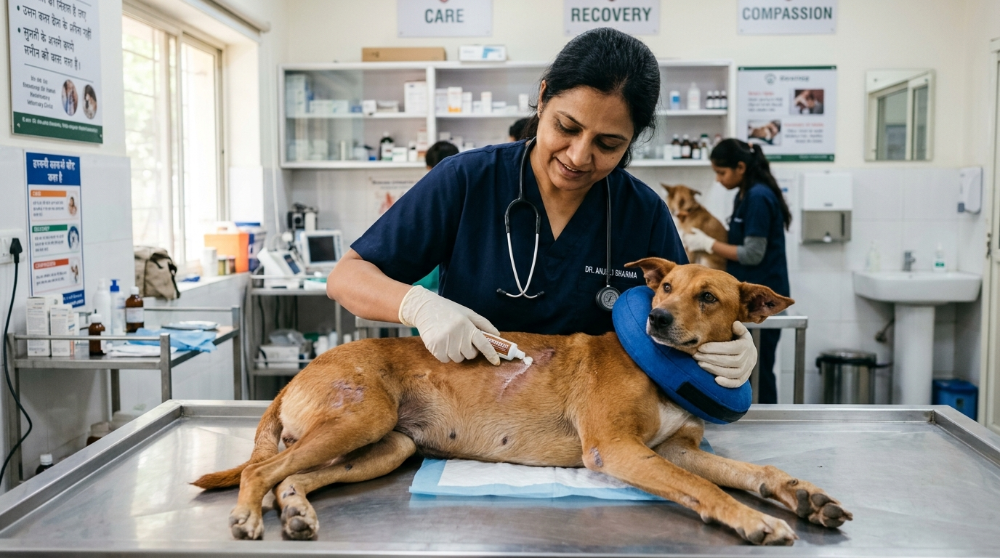

For street animals surviving in tropical developing climates, minor skin lacerations and untreated reproductive cycles represent two of the greatest drivers of systemic suffering. A small territorial scrape or bite wound contaminated with street dust and flies can rapidly develop into a life-threatening, flesh-eating maggot infestation (myiasis) within 48 hours. Simultaneously, unsterilized street dogs endure continuous cycles of territorial fighting, starvation, and agonizing puppy mortality on high-speed roadways.
At Dogs Protection Trust (DPT), our clinical facility operates as both an emergency surgical trauma theater and a high-standard Animal Birth Control (ABC) hub. In this clinical guide, we explain the surgical protocols of Catch-Neuter-Vaccinate-Return (CNVR), our step-by-step procedure for suffocating and extracting deep tissue maggots, and how modern dermatology reverses severe mange.
1. Animal Birth Control (ABC) & CNVR: The Only Scientific Solution
For decades, municipal culling or relocating street dogs was attempted across various Indian cities, resulting in absolute failure due to the biological vacuum effect—when dogs are removed from a territory, unsterilized packs from adjacent areas rapidly migrate in to exploit available food sources. Catch-Neuter-Vaccinate-Return (CNVR) is the only method proven by the World Health Organization to stabilize dog populations, eradicate rabies, and reduce canine aggression.
Our Surgical Sterilization Standards
- Pre-Operative Assessment: Every candidate undergoes a physical exam, temperature check, and mucosal evaluation for anemia before general anesthesia.
- Sterile Ovariohysterectomy (Female Spay): Complete surgical excision of both ovaries and the uterine body through a minimal midline or flank incision under sterile drape protocols, completely eliminating future pyometra (fatal uterine infection) and mammary tumors.
- Bilateral Castration (Male Neuter): Prescrotal or scrotal orchiectomy reducing roaming, territorial urine spraying, and eliminating testicular cancer risk.
- 5-Day Post-Op Recovery: Dogs recover in individual, sanitized kennels receiving injectable cephalosporin antibiotics, anti-inflammatory analgesics (Meloxicam), and daily surgical site checks until suture absorption or removal before return.
2. The Biology & Clinical Treatment of Myiasis (Maggot Wounds)
Myiasis occurs when blowflies (Chrysomya bezziana) deposit hundreds of microscopic eggs into broken skin or bodily orifices. Within 12 to 24 hours, the eggs hatch into voracious, carnivorous larvae that secrete collagenolytic enzymes, burrowing deep into living muscle tissue, cartilage, and bone while releasing foul-smelling necrotic exudate.
The 4-Step DPT Maggot Eradication Protocol
- Deep Analgesia & Sedation: Attempting to extract maggots from conscious dogs causes severe trauma-induced neurogenic shock. Patients are gently sedated with Xylazine/Diazepam and administered high-potency opioids/NSAIDs.
- Suffocation Application: Pure pharmaceutical-grade turpentine oil or Negasunt powder is applied on sterile cotton packings over the wound cavity. The vapor cuts off larval oxygen supply, forcing hundreds of suffocating maggots to migrate out to the surface.
- Meticulous Forceps Extraction: Handlers extract every visible larva using sterile curved forceps, reaching deep into subcutaneous pockets and sinus tracts.
- Pressurized Antiseptic Lavage: The necrotic cavity is flushed under pressure using warm sterile saline mixed with 0.05% Chlorhexidine and 1% Betadine to dislodge microscopic larvae waste and anaerobic bacteria, followed by topical collagen powder to stimulate rapid tissue granulation.
🐾 Case Study: Bholu's 12-Centimeter Head Wound Recovery
The Emergency: Bholu, a 4-year-old Indie dog, was discovered near Mysore Railway Station with an open 12-centimeter maggot wound covering the entire crown of his skull. Over 250 maggots were actively burrowing down to the periosteal bone layer.
The Treatment: Over three consecutive days of gentle sedation, debridement, and pressurized iodine flushing, our veterinary team extracted every single larva. Bholu was placed on high-dose IV Ceftriaxone, daily hydrogel wound dressings, and high-protein egg nutrition.
The Result: Within 40 days, healthy red granulation tissue covered the entire skull, and fresh golden fur regrew. Today, Bholu is 100% healed with zero neurological deficit!
3. Dermatological Protocol for Sarcoptic & Demodectic Mange
Mange is an agonizing parasitic dermatosis caused by microscopic mites burrowing through canine epidermal layers (Sarcoptes scabiei) or overpopulating hair follicles due to immune suppression (Demodex canis). Affected dogs scratch relentlessly until they are bleeding, hairless, and covered in thick crusts (elephant skin).
Modern Isoxazoline Therapy
Traditional toxic dipping with organophosphates has been replaced at DPT with safe, next-generation oral isoxazoline chews (Fluralaner / Bravecto or Sarolaner / Simparica):
- Rapid Larval & Adult Mite Kill: A single oral dose achieves 100% mite mortality within 24 to 48 hours.
- Medicated Antiseptic Baths: Weekly warm baths with 2.5% Benzoyl Peroxide and Chlorhexidine to remove dead crusts and clear secondary bacterial Pyoderma.
- Skin Barrier Nutrition: Supplementing daily meals with cold-pressed virgin coconut oil, Omega-3 fatty acids, and Zinc to nourish hair follicles and accelerate lush coat regrowth.
4. Surgical Techniques: Midline vs. Flank Laparotomy in Street Canines
In high-volume shelter settings, selecting the appropriate surgical approach for female spaying (ovariohysterectomy) is crucial for minimizing post-operative complications:
- Midline Celiotomy: Standard incision through the linea alba. Offers superior visual exposure of the reproductive tract and uterine bifurcation, making it the ideal technique for mature females, gravid uteri (early pregnancy), or suspected pyometra cases.
- Left Flank Laparotomy: An incision made in the paralumbar fossa between the last rib and iliac crest. In active lactating females or dogs being returned to rural environments with moist dirt ground, the flank approach significantly reduces the risk of surgical site contact with ground bacteria and prevents dehiscence from suckling puppies.
5. The 4 Biological Stages of Wound Granulation & Healing
Deep necrotic maggot wounds heal primarily through second intention, relying on the body's natural cellular regeneration phases:
- Hemostasis & Inflammation (Days 1 - 3): Platelet activation and fibrin clot formation, followed by neutrophil infiltration to destroy necrotic debris and bacteria.
- Cellular Debridement (Days 3 - 6): Macrophages release growth factors (TGF-beta, VEGF), clearing liquefied necrotic tissue and signaling blood vessel formation.
- Proliferation & Angiogenesis (Weeks 2 - 4): Fibroblasts synthesize rich collagen while capillary buds create bumpy, bright red granulation tissue that fills the cavernous wound cavity.
- Epithelialization & Maturation (Weeks 4 - 8): Keratinocytes migrate from wound margins across the granular bed, closing the surface, while collagen cross-links to restore tensile strength.
6. Veterinary Antibiotic Stewardship in Shelter Care
At DPT, we follow strict antibiotic stewardship to prevent drug-resistant superbugs. We never prescribe antibiotics blindly; wound swabs undergo culture and sensitivity testing for complex cases, and standard post-op courses rely on first-generation cephalosporins (Cephalexin/Cefotaxime) paired with metronidazole, reserving fluoroquinolones only for culture-verified multi-drug resistant bacterial infections.
7. The Global Standard Ear-Notching (Right V-Notch) Protocol
Under Animal Birth Control (ABC) rules formulated by the Animal Welfare Board of India, every street dog that undergoes surgical sterilization receives a painless right-ear V-notch or tip removal while under deep general anesthesia before surgical recovery. This universal visual marker prevents the animal from ever being re-captured or subjected to unnecessary exploratory abdominal surgery by future rescue teams.
8. Multimodal Post-Operative Pain Management (Analgesia)
At DPT, we reject the antiquated myth that street dogs possess higher pain thresholds and do not require analgesia. Unmanaged surgical or wound pain induces neuroendocrine cortisol surges, delays tissue granulation, and triggers anorexia. We deploy a comprehensive multimodal analgesic protocol:
- Pre-Emptive NSAID Therapy: Injectable Meloxicam (0.2 mg/kg) administered prior to surgical incising to block cyclooxygenase-2 (COX-2) inflammatory prostaglandins.
- Local Infiltration Anesthesia: Bupivacaine/Lidocaine splash blocks administered along the incision line and ovarian pedicles for prolonged local numbness.
- Post-Op Oral Analgesic Regimen: Chewable Carprofen or Meloxicam syrup provided for 5 consecutive days post-surgery, ensuring pain-free eating and resting.
9. Sponsoring a Surgical Recovery Patient
A life-saving maggot wound extraction, complete course of antibiotics, and 30 days of medical boarding costs approximately ₹2,500. By donating, you directly transform a dog from agonizing pain into vibrant health.
Written by DPT Veterinary Surgical Desk
Dedicated to sterile Animal Birth Control surgeries, intensive wound debridement, and transformative dermatological recovery at Dogs Protection Trust Mysore.
6. Post-Operative Field Kennels vs Sanctuary Monitored Recovery
Sterilizing female street dogs requires rigorous post-operative hospital observation to ensure abdominal incisions achieve complete peritoneal and dermal tensile strength before the animal is released back to its territory. In our Mysore surgical recovery ward, spayed females are housed in individual, sanitized recovery suites lined with medical absorbent bedding for a minimum of 4 to 5 days. Daily clinical rounds monitor incision margins for erythema, swelling, or suture dehiscence while maintaining balanced post-surgical analgesia via Meloxicam and Tramadol protocols.
For male canines undergoing orchiectomy, scrotal ablation or pre-scrotal incisions heal rapidly within 48 to 72 hours under prophylactic antibiotic cover. Before returning any sterilized canine to its native street pack, our veterinary team conducts a comprehensive final health screening, administers a fresh Anti-Rabies booster, and provides a high-protein feast to ensure maximum vitality and seamless re-integration into its neighborhood territory.
7. Community First-Aid for Maggot Wounds (Myiasis) Before Hospital Transfer
Emergency Protocol for Treating Maggot Wounds on the Street
Maggot infestations expand with frightening speed, destroying healthy muscle and connective tissue within 48 hours. If you encounter a street dog suffering from a visible, foul-smelling maggot wound in Mysore, follow these crucial first-aid steps:
- Apply Turpentine or Chloroform Drops: Gently place a cotton swab soaked in medical-grade eucalyptus or turpentine oil over the wound cavity. The vapor deprives maggots of oxygen, forcing larvae to surface where they can be removed with sterile forceps.
- Never Use Toxic Engine Oil: Avoid hazardous folk remedies like pouring dirty motor oil, diesel, or kerosene into wounds, which causes fatal systemic chemical poisoning and renal failure.
- Dust with Antibacterial Larvicide Powder: Apply veterinary Negasunt or Lorexane powder generously over the wound to kill residual larvae and deter blowflies, then alert DPT helpline immediately for medical transport.